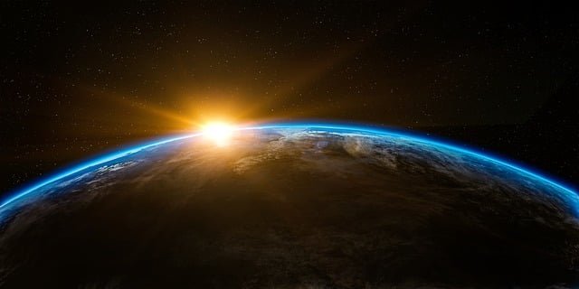

The Restaurant on the Edge of the Universe
Some people have often said just how wonderful the restaurant on the edge of the universe can be. The dishes are considered by mere mortals to be difficult to comprehend, and even harder to eat. How can one devour a concept? How can one simply savour light, or mortality, or the greater plan for the universe? Still, this has never stopped our chefs from creating the most ambitious menu that has ever been developed in all the parallel universes (including the ones that have been served to our more discerning customers). Please visit us if you find yourself traveling through this timeline, and be sure to enjoy your experience. If it is grand enough, perhaps we will add it to the menu.